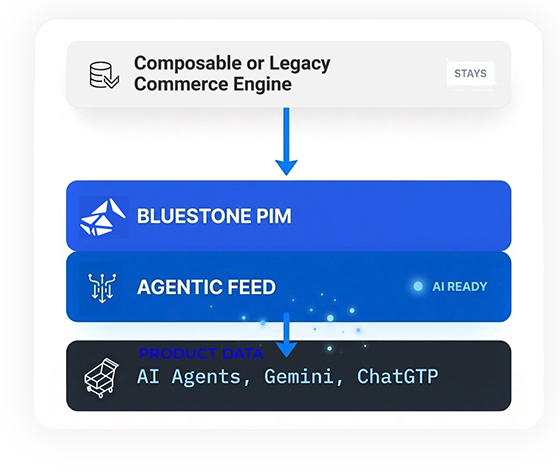

AI agents need structured product truth. You don't have to replatform commerce to deliver it. Add Bluestone PIM as your product intelligence layer.

Choose growth over risk by bypassing complex replatforming programmes. Our composable approach opens revenue and agentic commerce opportunities quickly, keeping your business agile and disruption-free.
Tearing down your existing systems to build something new is expensive and takes years.
Bluestone PIM can sit on top of what you already have. It translates your current data into the format AI needs.
Be there when customers and their AI agents make decisions. Our framework makes it clear and straightforward: bring your data into Bluestone PIM to scale sales and marketing across AI platforms.
Integrate your commerce engine, ERP, and MDM with Bluestone PIM. Our platform is a central hub for all commerce data, ending fragmented silos and unifying your product identifiers.
A single source of truth connecting all legacy systems
Create "Agent-Ready" open structured specs, variant logic, and compatibility. Feed enriched data back to your commerce engine to improve storefront UX instantly, while maturing for agents.
Governed truth that powers both web and AI discovery
Roll out Agentic Feed to push governed truth to assistants. Enable canonical links and sampling-based validation logic to ensure agents represent your catalogue with 100% accuracy.
Live Agentic Commerce with zero migration risk
Enterprise-grade security meets AI commerce, giving you the tools to scale your reach without compromising system integrity.
Modular architecture that fits into any IT stack. Add the capabilities you need now and scale as the AI landscape evolves.
Built for universal connectivity. Our platform bridges the gap between your existing tools and the AI ecosystem without friction.
Auto-scales across markets and peaks. Our infrastructure handles the technical heavy lifting so you can focus on growth.
Standardising product handshakes, ensuring AI can ingest your catalogue at any commerce touchpoint without hitting technical barriers.
Using the Model Context Protocol to provide AI agents with structured product truth — MCP is as smart as your latest update.
Generative and analytical AI that enriches, localises, and ensures your products stay accurate — readying your catalogue for AI commerce.
Enterprise-grade security meets AI commerce, giving you the tools to scale your reach without compromising system integrity.
AI "hallucination" cost sales. We provide the source truth so AI gives customers the right specs, prices, and availability.
Be present on every platform — from ChatGPT and Claude to the next gen of assistants — without re-entering data once.
Bluestone is plug-in ready. Marketing manages product data while IT focuses on larger core initiatives.
AI agents are already being used by consumers to research, compare, and buy products. Early movers are gaining visibility in AI-generated recommendations. Waiting means ceding ground to competitors who are already indexed and structured for AI discovery.
Web scraping gives AI agents incomplete, stale, and unstructured data — leading to hallucinations and incorrect answers. A structured MCP connection provides live, governed product truth that agents can reason over accurately, every time.
No. Bluestone PIM sits as a product intelligence layer on top of your existing commerce engine. Your current stack stays in place — we add the structured, AI-readable product truth layer on top, enabling agentic commerce without a costly migration.
Choose the PIM built for the AI era.